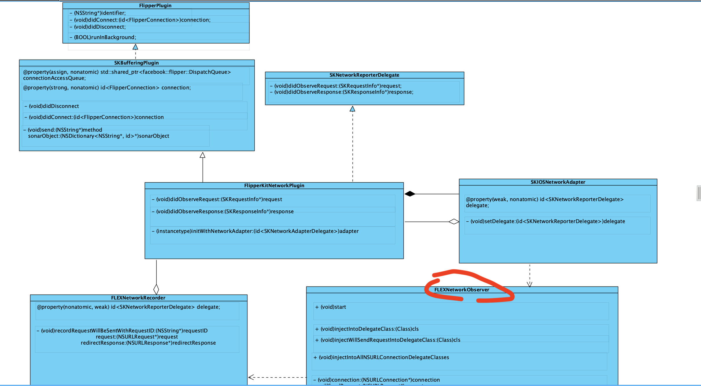
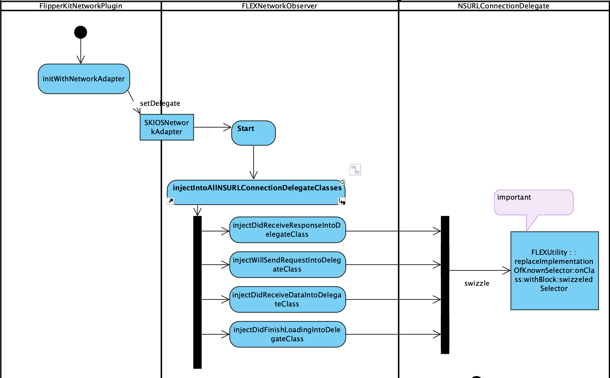

Recently, Facebook launched Flipper, A desktop debugging platform for mobile developers. And there is an embedded network plugin, FlipperKitNetworkPlugin , which works as an inspector of network activities in our application. Let’s figure out how it can achieve that.
Overview
Here comes the class diagram of this network plugin.

In these classes, FLEXNetworkObserver is the key one for this plugin.
When the plugin starts, it will inject all the NSURLConnectionDelegate classes and functions to observe the remote request and response event.
Swizzle
The key idea is to swizzle any classes that implement one of the selectors in URLSession and NSURLConnectionDelegate , and get chance to get the request and response data.
The process is like this:
find out selectors in URLSession and NSURLConnectionDelegate which are related to network activities.
Retrieve all the class definitions that have been registered with the Objective-C runtime. The Objective-C runtime library automatically registers all the classes defined in your source code.
Find any class that implements one of the above selectors
+ (void)injectIntoAllNSURLConnectionDelegateClasses { // Only allow swizzling once. static dispatch_once_t onceToken; dispatch_once(&onceToken, ^{ // 1. 🌟 Swizzle any classes that implement one of these selectors. const SEL selectors[] = { @selector(connectionDidFinishLoading:), @selector(connection:willSendRequest:redirectResponse:), @selector(connection:didReceiveResponse:), @selector(connection:didReceiveData:), @selector(connection:didFailWithError:), @selector (URLSession: task:willPerformHTTPRedirection:newRequest:completionHandler:), @selector(URLSession:dataTask:didReceiveData:), @selector(URLSession:dataTask:didReceiveResponse:completionHandler:), @selector(URLSession:task:didCompleteWithError:), @selector(URLSession:dataTask:didBecomeDownloadTask:), @selector(URLSession: downloadTask:didWriteData:totalBytesWritten :totalBytesExpectedToWrite:), @selector(URLSession:downloadTask:didFinishDownloadingToURL:) };
const int numSelectors = sizeof(selectors) / sizeof(SEL);
// 2. 🌟 Retrieve all the class definitions that have been registered with the Objective-C runtime. The Objective-C runtime library automatically registers all the classes defined in your source code. Class* classes = NULL; // 2.1 🌟 You can pass NULL to obtain the total number of registered class definitions without actually retrieving any class definitions. int numClasses = objc_getClassList(NULL, 0);
if (numClasses > 0) { // 2.2 🌟 An array of Class values. Each Class value points to one class definition classes = (__unsafe_unretained Class*)malloc(sizeof(Class) * numClasses); numClasses = objc_getClassList(classes, numClasses); // 3. 🌟 Find any class that implements one of the above selectors for (NSInteger classIndex = 0; classIndex < numClasses; ++classIndex) { Class className = classes[classIndex];
if (className == [FLEXNetworkObserver class]) { continue; }
// Use the runtime API rather than the methods on NSObject to avoid // sending messages to classes we're not interested in swizzling. // Otherwise we hit +initialize on all classes. NOTE: calling // class_getInstanceMethod() DOES send +initialize to the class. That's // why we iterate through the method list. unsigned int methodCount = 0; Method* methods = class_copyMethodList(className, &methodCount); BOOL matchingSelectorFound = NO; for (unsigned int methodIndex = 0; methodIndex < methodCount; methodIndex++) { for (int selectorIndex = 0; selectorIndex < numSelectors; ++selectorIndex) { // Find a target method in this class if (method_getName(methods[methodIndex]) == selectors[selectorIndex]) { // 4. 🌟 Inject this class [self injectIntoDelegateClass:className]; matchingSelectorFound = YES; break; } } if (matchingSelectorFound) { break; } } free(methods); }
// 🌟 If selector `connection:willSendRequest:redirectResponse:` is not a instance method in this class, use this block as the implementation for swizzledSelector NSURLConnectionWillSendRequestBlock undefinedBlock = ^NSURLRequest*( id<NSURLConnectionDelegate> slf, NSURLConnection* connection, NSURLRequest* request, NSURLResponse* response) { [[FLEXNetworkObserver sharedObserver] connection:connection willSendRequest:request redirectResponse:response delegate:slf]; return request; };
Then, replace the original implementation of connection:willSendRequest:redirectResponse: method with flipper’s own implementation for swizzledSelector.
Method oldMethod = class_getInstanceMethod(cls, selector); if (oldMethod) { // Add new method to the class, whose signature has `_flex_swizzle_` prefix and custom implementation class_addMethod( cls, swizzledSelector, implementation, methodDescription.types);
The activity diagram for the above code might be this, 
Observer and Record
If there is an network activity, a use calls connection:willSendRequest:redirectResponse:delegate: or connection:didReceiveResponse:delegate is called in an object adopting NSURLConnectionDelegate protocol. In fact, its original implementations have been replaced. And Flipper’s own implementations for these two selector are called, which call the related willSendRequest: and didReceiveResponse: method in FLEXNetworkObserver class. So, Flipper got the chance to observe the request and response of network activities.